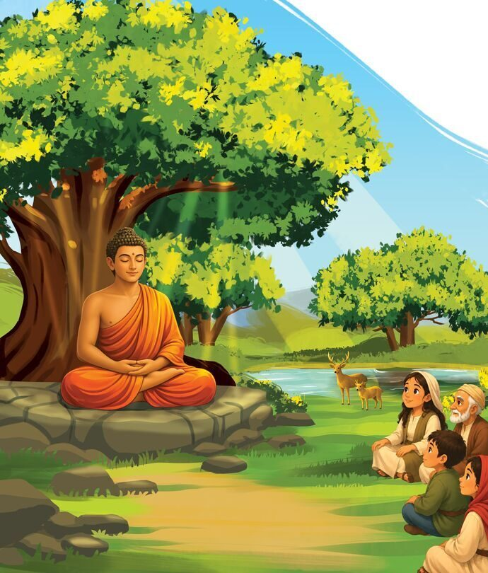
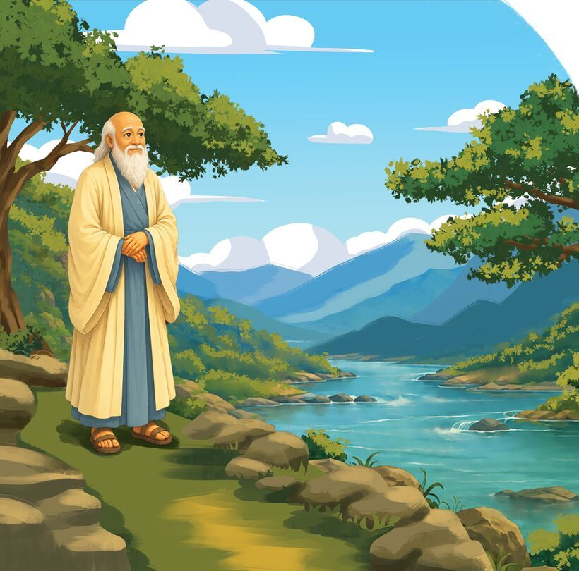
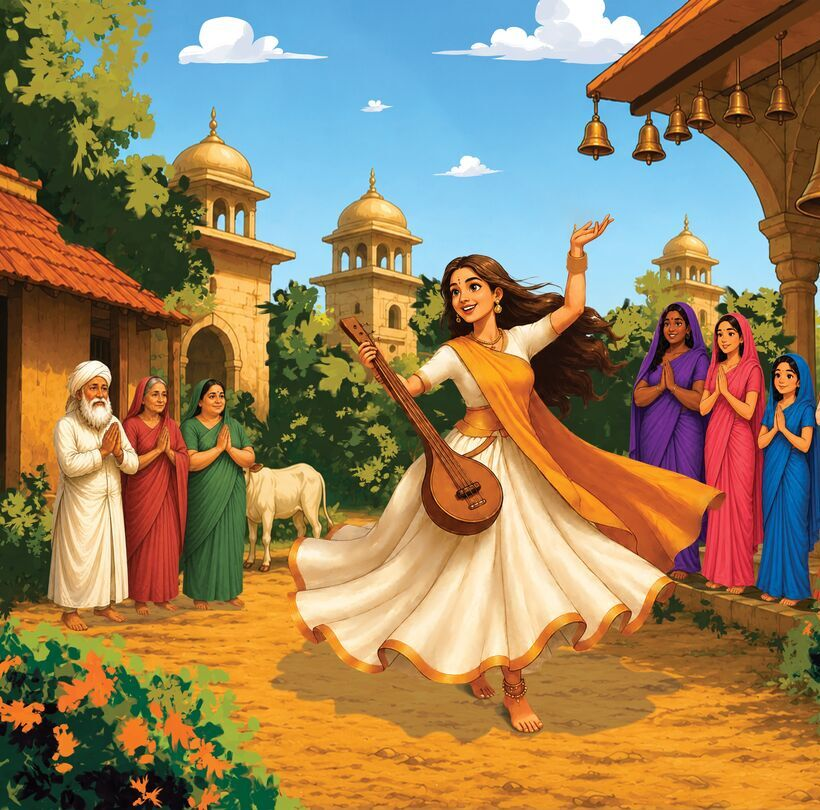

What did Jesus, Buddha, and Mirabai have in common?
What secret did Laozi discover watching water?
Twelve wise teachers from across history, with simple words for young hearts. From East to West, they all point to the same treasure: love is who we are.
For ages 6 to 10, and the child in all of us.
A peek inside



The twelve
- Buddha
- Mirabai
- Rabia
- Julian of Norwich
- Amma
- Laozi
- Jesus
- Kabir
- Rumi
- Yogananda
- Krishna
- Thich Nhat Hanh
Mystics, poets, and sages from many traditions, each given two spreads: one with their own words, and one that unpacks what they might have meant.
Made for reading aloud
Listen to what they said
Each teacher opens with a short quote, set in big, friendly type that's easy to read together.
Here's what I think they meant
Then a warm, plain-spoken reflection, written the way a dad would talk to his kid at bedtime.
Room to wonder
Pronunciation helpers, a note for grown-ups, and curious questions at the back keep the conversation going.
Be the first to know
The book is almost ready. I'll let you know the moment it's out, and share a few of the teachers along the way.
Hear when it's out